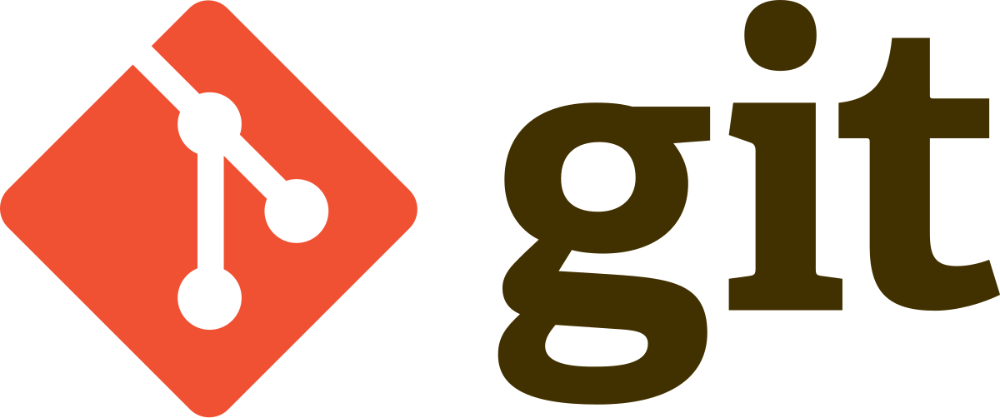

GIT

Git adalah sebuah version control sistem yang digunakan untuk mengelola kode sumber, membantu proses kolaborasi pengembangan proyek dengan mempermudah user dalam melacak perubahan yang ada dari source code.
Instalasi GIT
Windows : Klik disini
MacOS : Klik disini
Linux : Klik disini
Verifikasi Instalasi GIT
$ git --version
Konfigurasi GIT
Mengatur nama pengguna git di lokal sistem
git config --global user.name "nama anda"
Mengatur email pengguna git di lokal sistem
git config --global user.email "email@example.com"
Melihat konfigurasi
git config --list
Perintah GIT
Membuat Repositori dan Menyimpan Perubahan
Membuat git repositori lokal
git init nama_direktori
Menyalin git repositori remote ke lokal
git clone url_repositori
Menyimpan perubahan file tertentu ke staging area
git add nama_file
Menyimpan semua perubahan di repositori ke staging area
git add .
Menyimpan perubahan di staging area ke git repositori
git commit -m "pesan commit"
Melakukan Perubahan Terhadap File Atau Direktori
Menghapus berkas tertentu dari repositori dan staging area
git rm nama_file
Menghapus direktori dari repositori dan staging area
git rm -r nama_direktori
Memindahkan file ke direktori lain
git mv nama_file direktori_tujuan/
Mengubah nama file
git mv nama_file nama_file_baru
Perubahan Di Repositori
Menampilkan perubahan berdasarkan status
git status
Menampilkan riwayat commit
git log
Membatalkan perubahan yang belum di commit
git restore
Membatalkan perubahan di staging area
git reset nama_file
Mengatur ulang ke commit terakhir
git reset HEAD-1
Remote Repositories
Menambahkan akses ke remote repository
git remote add nama_alias URL_repositori
Menghapus akses remote repository
git fetch nama_alias
Mengambil perubahan dari remote repository tanpa menggabungkannya ke lokal
git fetch nama_alias
Mengirim perubahan lokal ke remote repository
git push nama_alias nama_branch
Mengambil perubahan dari remote repository
git pull nama_alias nama_branch
Branch & Merge
Menampilkan daftar branch
git branch
Membuat branch baru
git branch nama_branch
Beralih ke branch lain
git checkout nama_branch
Membuat dan beralih ke branch baru
git checkout -b nama_branch
Menggabungkan antara branch saat ini dan branch lain
git merge branch_lain
Menyimpan perubahan sementara dengan pesan perubahan
git stash save "pesan perubahan"
Menampilkan daftar stash yang telah dibuat
git stash list
Mengembalikan perubahan dari stash tanpa menghapus stash tersebut
git stash apply
Menghapus stash setelah mengembalikan perubahan
git stash drop